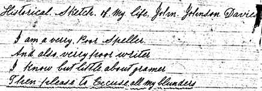

John Johnson Davies

Historical Sketch of My Life. John Johnson Davies

I am a verry Poor Speller
And also verry poor writer
I know but little about gramer
Then please to Excuse all my blunders
[I am taking the entire writing of John Johnson Davies and typing it in, making corrections in the spelling and grammar to improve reading. I will periodically include some uncorrected text as it seems fitting. If I make mistakes, please forgive me as well. - Joseph F. Buchanan, great-great-grandson (Here is a version in his original style 10/8/96 jfb)]
I was born on the 28th of December 1831, in the city of Carmarthen, Carmarthen Shire, South Wales. My father's name was John and my mother's maiden name was Sarah Lewis. My father was born in the year of 1797. He died in the month of December 1839. My mother was born in the year of 1798. She died in the month of November 1856. They were buried in Carmarthen, South Wales. My parents had ten children. My father was a stone cutter by trade, and by lifting too hard, and inhaling the dust of the stone, he bled to death. My sister Sarah Jane died a few days before father died. My mother was now left with four children to provide for in that country. This was a gloomy time for mother. The names of the children that were left with mother were: David, Phillip, John and Louis. When I was nine years old, I had to work to help Mother to get the comforts of life. I worked in a weaver shop quilting for the weavers and I learned that trade.
After I served my apprenticeship, I thought I would take a trip from home to see the towns and cities in other parts of the country. It was in the month of January 1850 that I started from home, on foot, because there was no railroad in that part of the country at that time. The first place I came to on my journey was the city of Llanellhe (Llanelli). This was twenty miles from home. I felt a little homesick here because I did not get work here. I stayed with my aunt a few days in this city. I felt quite lonesome here. Why? Because I was among strangers and very young and had but little experience in the world. The next place I came to was Caslocher (Loughor?). I was lucky this time. I got work with a man named David Thomas. I worked for him three months and made good wages. I went to meeting with him on Sunday. He was the leader of the choir of the Baptist Church. He introduced me to the singers and I joined them in their singing. I made many friends in this place. I left this place feeling good because I had some money now to go on with.
I started again in a rain storm. I traveled a few miles and got to Swanze (Swansea) city, Glanmorgan Shire. This is a great sea port. I did not get work in this place and now I began to be homesick again. I met a friend in this place. He introduced me to a gentleman by the name of William Jones. I asked him if he could give me a job of work. He asked me if I served my apprenticeship. I said "Yes, sir. Here's my diploma". After he read it he said, "Yes, I will give you a job because you have learned the trade by a good tradesman." In a short time after that I was traveling towards his home. This was Saturday. His home was twenty miles from Swanze (Swansea) on the sea shore. The next day was Sunday. He took me to meeting, he belonging to the Presbyterian Church. The next day I started work. He watched me very close, but he soon found out that I understood my business. He also introduced me to the choir of his church and I took part with them. I did well in this place. Now I was getting home sick. I bought a suit of clothes and started for home. I got home on the 21st of December, 1850. I can tell you that I felt like the poet says, "there's no place like home," and that is true.
When I got home, my old friends came to see me and we had a good chat together and also singing. That evening I went to see the girl I kept company with before I left home. She welcomed me home and truly I felt at home in her company. Her name was Mariah. I started to work again for a man by the name of David Edwards. The loom that I got to work in was next to the door and I caught a very bad cold and I was taken very sick with the chills and fever. I was sick for a long time. I had a chill every day for many days, then one every other day, yes, for three months. Then they quit and in a few days I felt middling well. Then mother told me to go to Llanstuffan (Llanstephan), a village by the sea shore, for to regain my strength. I went to this place in a boat down the river fifteen miles. I enjoyed myself quite well a while and got healthy and strong. I was here for two weeks but to my sorrow, I was taken sick again. I started out one day from the village and went as far as the old Castles that were built by the Welsh people hundreds of years ago. When I got there, I sat on a log. This castle was built on a high cliff close to the sea shore and while looking at the tide a-coming in and the ships out on the sea. I felt a queer feeling come over me and I said, "Is it possible that I am going to have the chills again?" I did not stop there, but a few minutes before I was on the way to the village, a mile away, I was getting sicker all the time. When I got to the village, I took a drink of brandy, then I felt a little better. Next morning I had a heavy chill. I paid for my board and started back home with the evening tide. I got home on the 24th of June 1851. When I got in the house, my mother looked at me and said, "What is the matter, John?" "I am sick with the chills again". She said, "never mind, you will get over it." She did all in her power to help me. I was again sick until the middle of September. After I got over the chills this time, my brothers told me to go to school, that they would pay for the school bill. I was in school one quarter and this is all the schooling that "done me enny good to me in my days" [his words].
In the month of August 1851, the father and mother of the girl that I kept company with was re-baptized into the Church of Latter-day Saints. The son and the daughter of father Davies and also myself were baptized on the 10th of January 1852 into the Church of Jesus Christ of Latter-day Saints, by Abednego Jones. The names of the family of Father Davies is: Henry, the father, Martha the mother, Mariah, the daughter and William the son. The next day was Sunday. We went to meeting and we were confirmed by the Elders. Next Sunday the 18th, I went to meeting and I was ordained a Priest in this meeting and was sent out with two of the Elders to bear testimony to the people. I traveled a good deal with the Elders to help them with the singing and to bear testimony. I know that the preaching and singing of the Latter-day Saints has an influence that the world does not have. I know that this is true. My girl and myself used to go on excursions to the sea shore in a steamer and sometimes in a boat to the sea shore. England and Wales were great countries for enjoyments when I was there. Excuse me for saying so much about my girl. I can't help it for she was a good company to me.
I Was Made Glad
It was in Wales my native land
That I obeyed the Lord's command
And when I heard the Elders preach
I knew twas truth that they did teach
I was glad in the days of my youth
To hear the principles of truth
The same truths the Savior unfold
To the Jews and the nations of old
And when I first heard them proclaim
That the Gospel of truth once again
Has come to the earth to restore
The gifts of the gospel once more
No says the priest, we know the way
And we shall not lead you astray
But will show you the right road
And also the ways of the Lord
I know that they have gone astray
And they will not retres [retrace?] their way
I know that they have not the plan
To teach and save poor fallen man
That was a great and glorious day
When Joseph Smith the unlearned boy
Revealed the plan to save all men
Then let us praise the Lord, Amen.
- J. J. Davies
Now I will write a few words about the wedding. It was on the 3rd of October 1853 that I got married to Mariah Davies, the daughter of Henry and Martha Davies. This was in Carmarthen City, South Wales. There were a few of the prominent Elders invited to the wedding and we had a pleasant time. We had song, speeches, recitation, toasts and poetry composed for the occasion by the Elders of the Latter-day Saints.
I stayed in Wales a few months after the wedding. Now comes the sorrowful time for us to leave our friends and relations behind us in our native land. We prepared every thing that we could think of for the journey.
My Early Days
I often think of my youthful days
When roaming through the streets of Wales
With my comrades that were full of glee
And very seldom we disagree
Those days went fast, the years rolled on
Until I was nearly twenty-one
Then I thought it was time for me
To stop my roaming and foolish glee
So I turned my thoughts to greater worth
And then I found the precious truth
Then I obeyed the laws of heaven
The plan our Savior to us given
And now my friends I have something new
The truth of which I'll reveal to you
I've searched and searched but never did see
Yes only one that suited me
This maid I loved I thought would be
A comfort and a joy to me
And truly I must say 'twas so
For she was kind and loving too
And now the time at last has come
To be united both as one
And now once more the truth I'll tell
That I was suited extra well.
- Davies
Now we are going to start on that great journey across that great and mighty sea. We got to Liverpool on the 2nd of February 1854. My father and mother-in-law and myself and wife started to the valleys of the mountains on the 4th of February in the ship Colcondah, a sailing vessel. There were 464 saints on board. The ship was taken out to the open sea by a steamer and then we were left on sea to the mercy of God. There was one thing that gave us joy and satisfaction. We knew that God was with us to protect us on the sea. We had a good captain to guide the ship and in a short time after the steamer left us, the ship was in full sail and she looked handsome. We had a good breeze and she ploughed the main very fast. It was very cold when we left Liverpool and in a few days we got to a warmer climate and we were comfortable on deck. It was a sight to us to see ships a-sailing on the sea. We had a brass band on board. I was one of them. All of us were Welsh boys. There also was a choir and I was one of them, also a string band. They played for dances and we had dances on sea. There were a few Elders on board returning from their mission. We had a few bachelors on board, they having a place by themselves. They called it Bachelors Hall. They made lots of fun of us on sea. The captain was very kind to us, especially to the sick, but very little sickness we had on sea, and only one death. That was an infant and indeed it was a solemn time when the child was dropped into the sea. We enjoyed ourselves very well while traveling on the sea. Our president was Elder Curtis. He was returning from his mission. We had meetings every Sunday. Brother Curtis organized us and appointed teachers to look after us. We had a good voyage and had but one storm. It was a fearful one and I shall never forget it. It lasted about 4 hours. I was on deck to see it. All the waves looked to be as big as mountains. The sailors got all the sails fastened before the storm was very bad. The thunder and lightning was terrible and the rain a-pouring down, but the ship did well. She sprang a leak, but it was soon stopped. The storm quit about dark. The next day the ship was in full sail again and we all felt to rejoice for fine weather once more. I can tell you my friends that we felt to rejoice.
I Will Never Forget
I shall never forget that day
The time for me to go away
And leave my mother and brothers three
To go across the mighty sea
Twas in the morning at eight o'clock
The ship Colcondah, left the dock
Then the captain gave his command
And took us safe to Zion's land
And when we first stopt on the land
It did look good and also grand
We felt to say with one accord
Yes thanks, yes thanks be to the Lord.
- Davies
We had the pleasure to see a wedding on sea. The bride was tied to a chair and hoisted up quite a ways up the riggings of the ship. The Captain said, "What a brave woman!" Then she took her handkerchief and waved it in the breeze. The bridesman was carried around the ship in a chair by four bachelors. They made it for that purpose. This took place on about the first of March 1854. We had a great deal of amusement on sea. When we got through the Gulf of Mexico, the captain said, "ship about." Then we traveled northeast until we got to that great river Mississippi. Here a steamer came to meet us and towed us up that mighty river. The water was very muddy. When we came to the quarantine station, we had to stop there for the doctors to examine us. When the doctors came on board, we passed them two by two. They pronounced us all well. We started again and got to New Orleans on the 18th of March 1854. We made the trip in six weeks from Liverpool to this place. We stayed in New Orleans a few days to get ready to travel up the river again. It is about one hundred miles from the mouth of the Mississippi to New Orleans and we were glad to get there. About the last of March, we started for St. Louis in a small steam boat. Yes, indeed, we were crowded in that little boat.
We Were Crowded
Now we are traveling up the river
Crowded in that little steamer
But still we felt to ask the Lord
For to protect us all on board.
- the old man Davies
Now we are going yes faster and faster.
The steam boat a puffing and snorting and pushing her against the stream, but oh what dirty water for us to use. We dip it up for the settle it, but it does not get much better. Never mind, we will do the best we can with it. I must drink it anyhow because I am very thirsty.
And what a rackety noise! It makes me shudder.
The captain a-shouting and the water a-splashing
And the band a-playing and some of us a-singing
And some of the sisters a-washing and the babes a-crying
And the sailors a-talking and some of them a-smoking
And all of us trying to do something
And the boat a-tugging and snorting.
When traveling up the Missouri, also the Mississippi, I will say that it was a great sight for us to see such forests of timber and land. And what a wonderful stream this is going in such a force, taking down some very large logs. They sometimes strike the boat with tremendous blows, but we got through all right all the same. We got to St. Louis about the 10th of April 1854. We were glad to get there, but what a dirty looking place this is to be sure. When we got on shore, we had a great and a sad sight to see the Negroes working rolling the cotton bales. The boss that was looking after them used them very rough. Sometimes he would give them a hard lick with the whip he had. I thought that was bad to treat human beings in that way. And here we are, crowded into an old hospital. It is the best place we can get. We stayed two weeks in St. Louis. Here the cholera started among us. We buried a few of the brethren and sisters in this place. In a few days the word was to get ready to start up the river again, and we were glad of the chance. The distance from New Orleans to St. Louis is about twelve hundred miles. We bid that place good by and we weren't sorry of it.
The Gospel Plan
And God in his mercy to this generation
Revealed to the Prophet the plan of salvation
The very same plan the apostles of old
Was sent by the Savior to preach to the world
When Jesus our Savior was here among men
He taught the great plan of the gospel to them
And told his disciples, "Go forth and proclaim
through faith and baptism, salvation will come"
And also he said, "Lay your hands upon them
That they may receive the promise that's given."
For the spirit of God will show them the way
And also will guide them from going astray
There's twelve apostles to be in the church
Yes prophets and teachers to guide and to teach
And all these officers and many more
Were all in the church in the days of yore
But all of the Priests will say we don't need
The gifts of the gospel for they have all ceased
And this is the doctrine they've taught unto men
But the Saints don't believe such doctrine as them
The Latter-day Saints will not go astray
If they will be faithful and also to pray
Then let the Saints rejoice and to sing
For Jesus our Savior shall be our King.
- J. J. Davies
Now for another start again. We started from St. Louis on the 24th of April 1854. After we got started, the captain of the boat said "put on more steam" and away she goes. We had a good view of the country on both sides of the rivers. It was a great sight to us because most all of us were tradesmen from the work shop. That is the reason that so much traveling through this country was interesting to us. We had to stop a few times to bury the dead while going up the river. We got to Kansas, Missouri in the month of May. The distance from St. Louis to Kansas is about 4 hundred miles. This was a trading post in those days, one or two stores and a few houses. After we got on shore, we camped close to the river. The cholera was very bad amongst us by this time. In a few days we moved from here to Wm. Magee's plantation. Now we had a good place to camp in. We buried quite a few of our brethren and sisters in this place. It was here I buried my father- and mother-in-law. We stayed in these camps six weeks. We went from here to West Port and stayed here a few days to get ready to start on the plains. Now comes the labor and toil for a people that has no experience whatever. Yes, more than a thousand miles across these great plains and also those great mountains before we would get to the valleys of the mountains. Oh yes, we had a fine time to see the Negroes breaking the young steers for the company.
Traveling Together To The West, Myself And Wife
We've traveled together in peace many years
Yes, over the Sea and also great rivers
And on our journey thus far we are blessed
And God in His mercy our lives has preserved
The Cholera At Kansas
And that awful disease which all of us dread
Was raging in camp and many of us died
It was here I buried my father and mother
And truly twas awful to leave them both here
And those sorrowful days were terribly bad
But the saints had faith in the promise of God
Then we faithfully asked for the plague to cease
And God in His mercy then stopped the disease
Starting On The Plains
The first night we camped was on the Indian Creek
And my wife that very night was taken sick
And before the night was over,
The wife gave birth to a daughter.
- the old man Davies
Now For A Hard Trip
We started on the plains on the first of July, 1854. We traveled along the best we knew how for many a day. Now I will relate a few things that happened to us on the plains between West Port and Laramie. The first night we camped, it was at Indian Creek. Between twelve and one o'clock in the night, my wife gave birth to a daughter in a tent. At eight o'clock in the morning, we rolled out again. We traveled 25 miles and camped for the night.
Now I will tell you about the circus that we had the first few days on the plains. Our captain told us in the evening to get up early in the morning for to get ready to start in good time after breakfast was over. We got the cattle together and tried to yoke them up. I can assure you that this was quite a task for us, and after we got them hitched to the wagon, we started out. Now comes the circus, and it was a good one. The Captain was a-watching us and telling us what to do. He told us to take a whip and use it and say "Woo ah duke, gee brandy," and so on. Now the fun commenced, then we went after them pretty lively. When the cattle went "gee" too much, we would run to the off side and yell at them "woo ah," and bunting them with the whip stock. Then they would go too much "ha" and we were puffing and sweating, and if you were there to look on, you would say that it was a great circus. This was a great experience and a tough one. By the time we got half way across the plains, we could drive an ox team as well as you can any day. There were ten persons to every wagon. There were 6 men in my wagon, three of them left me at Fort Kearney and two sick in the wagon and one died on the road. We buried him next morning. I had to drive the team alone all the way to the valleys. I had a big red boil under my right arm which gave me great pain. We had plenty of grass and water, but very little wood on the plains. The women gathered buffalo chips to make a fire to cook by to give us something to eat. We traveled a few days more and got to Ash Hollow, which is 150 miles from Fort Kearney, and Fort Kearney is between 2 or 3 hundred miles from the Missouri River. When we were on the Ash Hollow hill, the wagon wheel went over a boy's head, and came very near losing his life. The Elders administered to him and he got better. His name is Jonathan Prothro. We had to lock both wheels to go down this hill. We camped for the night on the bottom of the Platte River. Next morning we were off again and after I got out a ways from this place, the wagon wheel went over my foot. I took some oil and anointed my foot and in a short time, it was all right.
In Memory Of Our Driving
Indeed we had very tough times
The first few days we drove our teams
The Captain, he would laugh sometimes
At us driving, yes on the plains.
- John
In camp after supper we would sing and chat. At nine o'clock we had prayers, then we'd go to rest. There were fifty wagons in the train. We had besides the Captain of the train, five more were chosen, one for every ten wagons, to tell us what we had to do. One day when traveling on the road we had a stampede. The teams started out on the run and they tangled up fast together. It was a wonder that no one was killed and nothing broke. Then we parted them and hitched them up again and traveled a few miles and camped for the night. We had another one [stampede], but this one was in the night while they were in the corral. The captain was afraid of Indians that night. We made a corral with the wagons every evening. The cattle that night bunted the wagons pretty lively and the captain shouted to the guard to let them go and they went out on the run. Next morning after breakfast we got them together, some were 15 miles away. We traveled a few miles that day. Next morning we rolled out again. When looking towards the West we could see the Chimney Rock. We thought we would get to it that day but it took us 2 or 3 days. Indeed it does look like a chimney. My wife had a gathered breast. She was sick for a long time. I got the Elders to administer to her and she received the blessing and got well. The buffalo on the plains in those days were by the tens of thousands. The boys wounded a young bull and he came a-snorting and crossed the road between the wagons, but the boys downed him and fetched one quarter to camp.
Now I will write a few words that I read in McCarlton's book, The Wonderland of the Wild West, which is very appropriate right here. "The untraveled tourist will feast his vision on those vast prairies or plains day after day until we reach the foot hills of the rocky mountains. We passed over these illimitable plains until the brain reels and the eye is tired of looking upon the vast expanse".
The Great Plains
And what a wonderful country
Is this great western prairie
Where Indians and buffalo roams
Without fear all over the plains. - J.J.D.
The night before we came to Laramie, we camped a few miles from the fort. This fort is located on the south side of the North Platte at the foot of the Black Hills, it being 550 miles west of the Missouri River. In the morning we rolled out towards the fort and in a short time after we started, we passed a large camp of Souix Indians. We passed the fort and camped by the Platte River for Noon. The Danish train that was behind us came along the same day. The Indians killed one of their cows. The Danish captain told the military captain about it, then the captain of the fort sent some of his men to see the Indians about it. They got to a dispute and the soldiers fired at them. The Indians killed some of the soldiers and burned the fort. The Danish captain came along to our camp and said that the Indians were on the war path. The trappers also were coming towards us for dear life. We all crossed the river all right. We had a large camp that night and we thought we would have to fight, but the Indians had their revenge. We camped together for a few nights, then we separated. I believed that the Lord over-ruled it for our good. We did not see any more Indians until we came to Salt Lake City.
The Glorious Plan
And when I think of the glorious plan
God had revealed unto fallen man
It gives me joy within my mind
To think that God had been so kind
And the gospel plan will save the world
If they will obey the laws of God
And also those that're now in prison
For they must hear the laws of Heaven
Our Savior went there to unlock the door
Also did preach to them that were there
Joseph and Brigham and Heber as well
They have gone there the glad tidings to tell
And our ancestors and friends are there
Looking to us their way to prepare
Then let us go and work for the dead
This we can do in the temples of God
And this will be, yes, a glorious time
When friends and relations will meet again
And when they do meet how happy they'll be
In peace and love through all Eternity.
- J. J. Davies
Now we are in the Black Hills and in a few days travel we got to the Red Butte. We jog along again and got to the Willow Spring and the next place was the Coyote Spring. From here to Independence Rock is ten miles. Here we struck the Sweet Water. The next place was the Devil's Gate. The next place was the Rocky Ridge, this ridge is the back bone of the Rocky Mountains. The streams run from here in all directions. Here where the South Pass is we are still a-going, yes, up and down through the hills until we reach Little Sandy. The next place was the Big Sandy. Right here is where Lot Smith burned the wagons with supplies for that great American army led by General Johnston. They were sent by the government to punish the Latter-day Saints for something that was not true. Six miles further west we struck the Green River. The next place we came to was Fort Bridger and in this old fort that army spent the winter of 1857. They stayed there because they were obliged to. The distance from this fort to Salt Lake City is one hundred and 13 miles. We bid good-by to the fort and traveled along the best we could until we got through the Emigration Canyon, then we could see the valleys of the mountains which made us to rejoice and to thank the Lord for his blessing to us on the journey.
We got to the city of the saints a few days after the October conference of 1854. We rolled through the city with joyful hearts and camped on the emigration square, west of the Temple block. We all felt to rejoice. Can you blame us for having a joyful heart? No, I do not think that you would. I know if you had to travel such a journey, you would feel to rejoice and to thank the Lord for the blessings that you did receive on such a journey - for I can say that the Lord did bless us on that great journey.
In Memory of the Journey
And when we left our Native land
To go west to the promised land
We felt so bad to leave behind
the dearest friends that were so kind.
I know that we were glad to see
The waters of the inland sea
And the great city of the west
Where the pilgrims shall have a rest.
- John J. Davies.
(continued in part 2...)
Typed by Joseph F. Buchanan - updated 7 Jan. 1997
Histories of my ancestors (index)